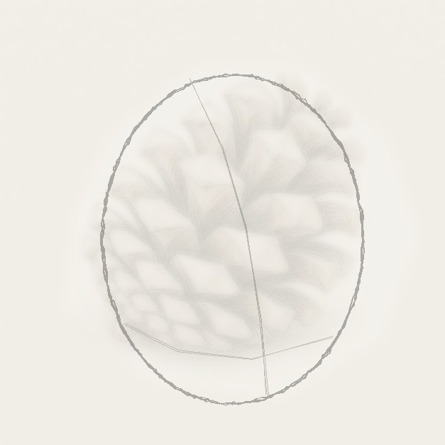
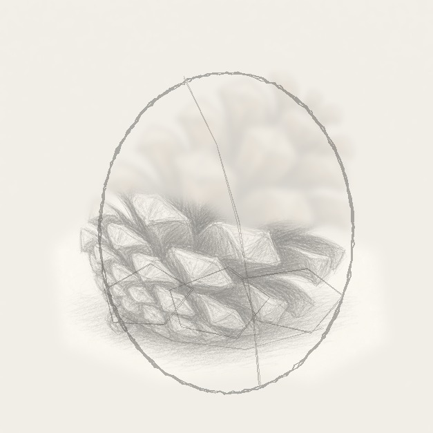
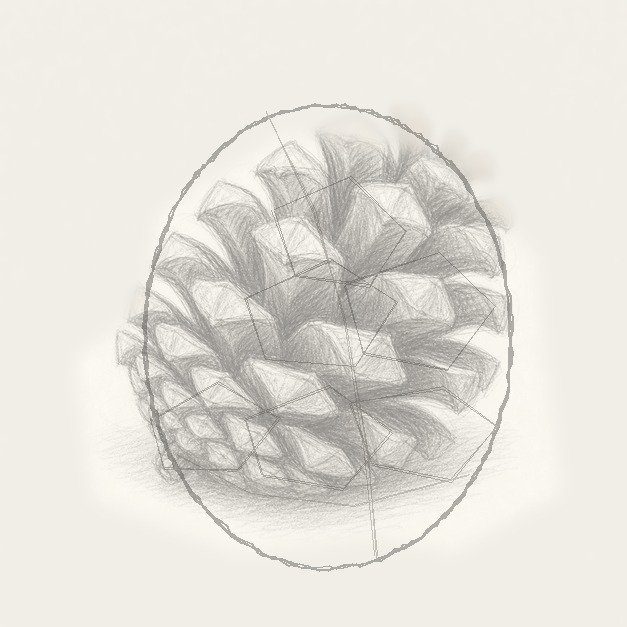
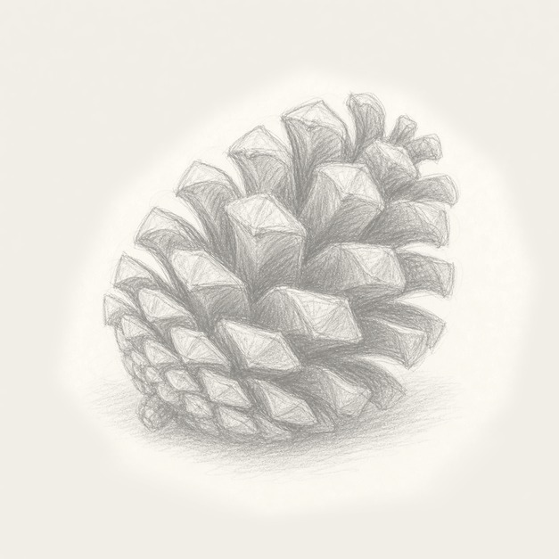

From the archive
Let's draw a detailed pinecone
Work lightly through the construction, then darken only the lines that help the finished sketch.
-
01

Place the tilted egg
Draw one light egg shape leaning slightly right, then add a curved center line and a low guide line for the bottom row of scales.
Sketch tip: Keep the guide shape wider near the bottom. A pinecone feels sturdier when the base has more weight.
-
02

Block the lower scales
Start at the bottom edge and draw three to five chunky scale blocks, each shaped like a small folded shield.
Sketch tip: Let the blocks overlap instead of lining them up evenly. The staggered edges make the cone look natural.
-
03

Stack the middle scales
Add a second row through the center, placing each new scale between two lower scales so the pattern climbs upward.
Sketch tip: Leave pale diamond-shaped tops on the scales. Those light planes help the pinecone read before you add shading.
-
04

Fill the top and sides
Work outward with smaller curled scales near the top and left edge, then sketch a soft shadow under the pinecone.
Sketch tip: Use fewer details at the far edges. Too many tiny scales can make the silhouette noisy.
-
05

Shade between the scales
Darken the gaps between scale layers, add brown pencil on a few front planes, and leave the highlighted tips mostly paper-white.
Sketch tip: Push the darkest graphite into the spaces behind the scales. That contrast gives the drawing its depth.